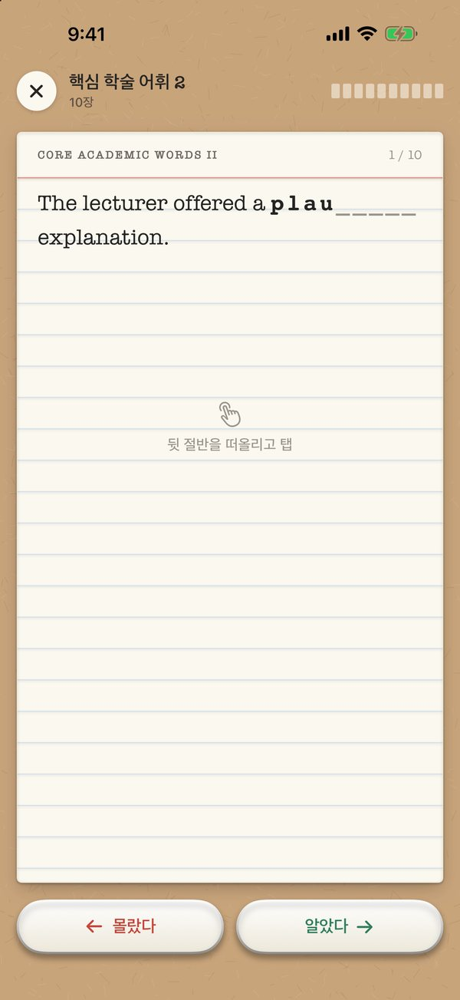
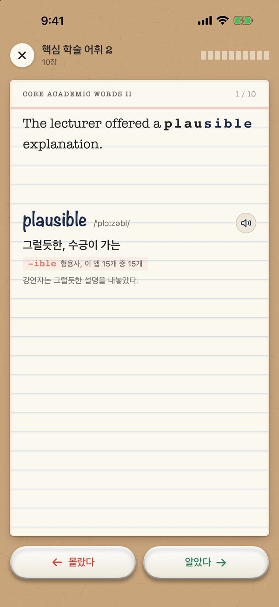
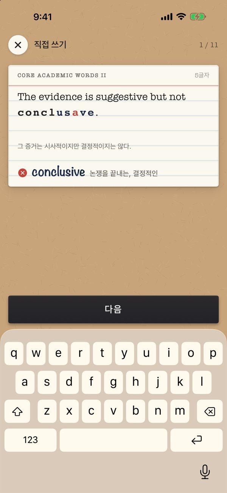
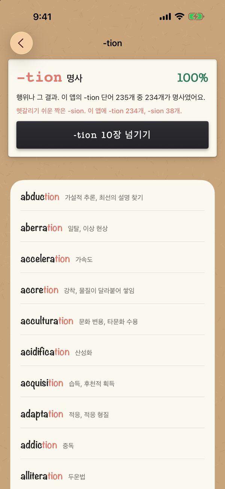
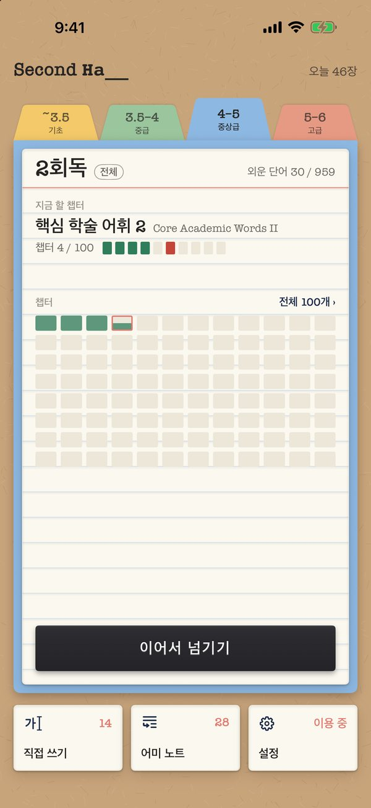

새 TOEFL 첫 유형,
단어 뒷 __
2026년 1월부터 TOEFL iBT 읽기는 Complete the Words로 시작합니다. 학술 문단 속 단어의 뒷 절반이 비어 있고, 한 칸에 한 글자씩 채워야 해요. Second Half는 이 유형 하나만, 회독처럼 빠르게 반복합니다.
App Store에서 받기iPhone, iOS 18 이상. 공부한 날 기준 처음 7일은 모두 무료예요.
plausible
이렇게 외워요
앞 절반을 보고 머릿속으로
학술 예문 속 단어가 시험과 같은 방식으로 앞 절반만 보입니다. might는 mi___, dancing은 dan____.
탭하면 잉크로 써져요
뒷글자가 한 자씩 채워지며 뜻, 발음, 음성, 어미 해설이 나옵니다. 문장은 한 칸도 움직이지 않아요.
알면 오른쪽, 모르면 왼쪽
한 장에 2~3초, 10장이 한 챕터. 두 회독 연속 알면 외운 단어가 됩니다. 다음 회독은 전체 또는 모른 것만.
모른 단어는 시험처럼
몰랐던 단어는 키보드로 뒷글자를 입력해 확인해요. 틀린 글자만 빨갛게 표시되고, 맞게 쓰면 목록에서 빠집니다.
직접 잰 어미 노트
빈칸이 명사 자리면 -tion, 형용사 자리면 -ous. 문장이 어미를 정해 줍니다. 앱에 담긴 단어로 하나하나 세어, 80% 이상 맞은 어미 28개만 남겼어요.
- -tion 명사 235개 중 234개
- -ity 명사 104개 중 103개
- -ous 형용사 47개 중 47개
- -ize 동사 60개 중 60개
-ence와 -ance, -ible과 -able처럼 헷갈리기 쉬운 짝도 함께 알려 주고, 어미마다 10장씩 바로 넘길 수 있어요.
- -ence 명사 36개 중 35개
- -ance 명사 31개 중 29개
- -ible 형용사 15개 중 15개
- -able 형용사 25개 중 23개
화면





새 1~6 밴드, 네 단계
CEFR A2~B1, 967장
CEFR B1~B2, 974장
CEFR B2~C1, 959장
CEFR C1~C2, 955장
ETS가 발표한 1~6 밴드와 0~120점 환산표를 기준으로 나눴습니다. 캠퍼스 생활부터 천문학, 지질학, 언어학, 철학까지 40개 학술 주제.
이용권
그 뒤 하루 20장, 쓰기 10개
처음 7일은 공부한 날 기준으로 셉니다. 두 구독 모두 하루 제한 없이 네 밴드의 모든 카드를 엽니다. 구독은 기간이 끝나기 24시간 전까지 해지하지 않으면 자동으로 갱신되며, App Store 계정 설정에서 해지할 수 있어요. 가격은 대한민국 App Store 기준이며 국가에 따라 다를 수 있습니다.
자주 묻는 질문
인터넷이 필요한가요?
아니요. 단어, 예문, 음성이 모두 앱 안에 들어 있어요. 가입, 로그인, 광고도 없습니다.
음성은 사람이 녹음했나요?
아니요. AI 음성 모델로 미리 만들어 담은 자연스러운 음성이에요. 음성이 없는 문장은 기기 음성이 읽습니다.
기록은 어디에 저장되나요?
내 기기와 내 iCloud에만 저장돼요. 다시 설치해도 같은 Apple 계정이면 이어서 할 수 있어요. 개발자는 학습 기록을 볼 수 없습니다.
실제 시험 문제인가요?
아니요. 시험 방식을 따른 연습용 카드이며, 실제 기출문제는 담지 않았습니다.